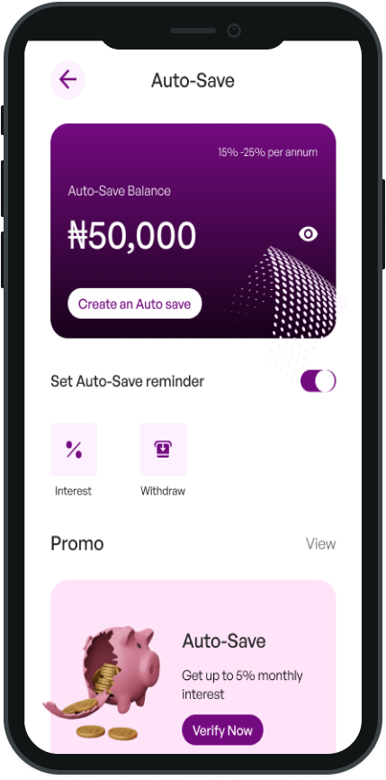
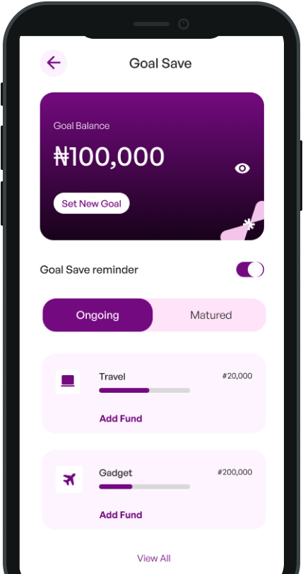
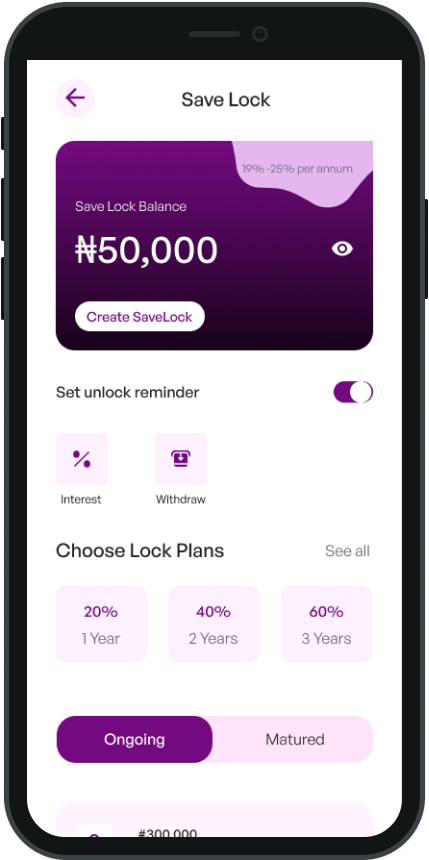
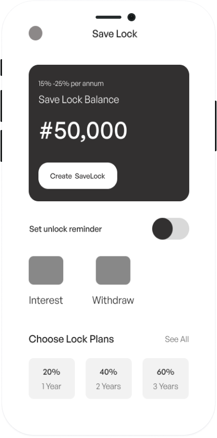

Goal-Based Savings
Set a graduation goal and track progress clearly over time.
SuperSave is a financial management app designed to help undergraduates develop better saving habits and build long-term wealth.


Favour, a 200-level law student, represents many undergraduates who worry about their financial future after graduation. Despite her desire to save from her pocket money, the lack of structure and discipline makes it difficult to stay consistent, leaving her uncertain about how she will cope when the time comes.

SuperSave is a smart savings platform designed to help students build financial discipline effortlessly. By simplifying the saving process, the app allows users to set small, consistent amounts aside over time without feeling overwhelmed. With features such as goal-based savings, automated deposits, and spending insights, SuperSave provides a structured yet flexible approach that helps students develop sustainable money habits as they prepare for graduation
Designed to make saving simple, consistent, and student-friendly.
Set a graduation goal and track progress clearly over time.
Automate small savings so building discipline feels effortless.
Discover flexible job opportunities, especially during holidays, to boost your savings.
Your funds are protected with reliable and secure systems you can trust.
SuperSave provides structured saving options designed to support different financial behaviors.
Automatically save small amounts daily or weekly to build consistent saving habits effortlessly.

Set specific saving goals like "Graduation fund" and track your progress towards achieving them

Lock away your savings for a set period to avoid the temptation of dipping into your funds

A thorough and structured approach helped me empathize with students and design solutions that are both effective and user-friendly
To start, I conducted in-depth user research to gain insights into the financial habits and challenges faced by undergraduates
Interview quote
"I know I should save, but I don't know where to start. Managing my money feels overwhelming"
From the research, several important insights emerged that guided the design decisions for SuperSave
Many students intend to save but often struggle because they do not have a clear or organized system for doing so.
Participants showed interest in automated savings options that allow them to set small amounts aside without needing to manually save each time.
Students feel more motivated to save when they have a specific goal in mind, such as preparing for graduation or covering future expenses.
Low-fidelity wireframes were created to explore the structure and layout of the app before moving into detailed visual design. At this stage, the focus was on defining the core user flow and ensuring that the saving process would be simple and intuitive.
The wireframes helped establish the key screens of the application, including the savings dashboard, goal creation interface, and automated saving options.
This step allowed early ideas to be tested and refined before developing the final visual interface.



After validating the layout and user flow through wireframes, high-fidelity designs were created to bring the product experience to life. The final interface focuses on clarity, simplicity, and ease of use, ensuring that students can quickly understand how to manage their savings.
The design uses a clean layout, clear progress indicators, and simple interactions to help users track their savings goals and stay motivated.
By combining automation, goal tracking, and structured saving options, SuperSave provides students with a practical tool to build better financial habits over time.
.png)
Designing SuperSave helped me better understand the financial challenges faced by undergraduate students and how thoughtful design can encourage positive financial habits.
Through the research process, I learned that many students want to save but struggle due to a lack of structure and consistency. This insight shaped the design of features such as automated savings, goal-based saving, and the Save-Lock option, which help users build discipline while maintaining flexibility.
Working on this project strengthened my ability to translate user insights into practical design solutions. It also reinforced the importance of simplicity in financial products, where clarity and ease of use are critical to building trust and encouraging long-term engagement.
If this project were developed further, the next step would be usability testing with real students to validate the experience and refine the interface based on their feedback.